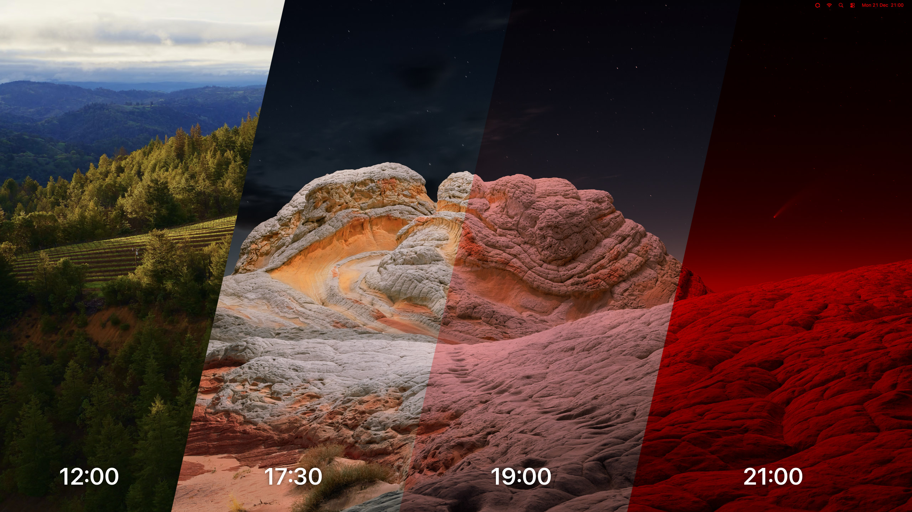
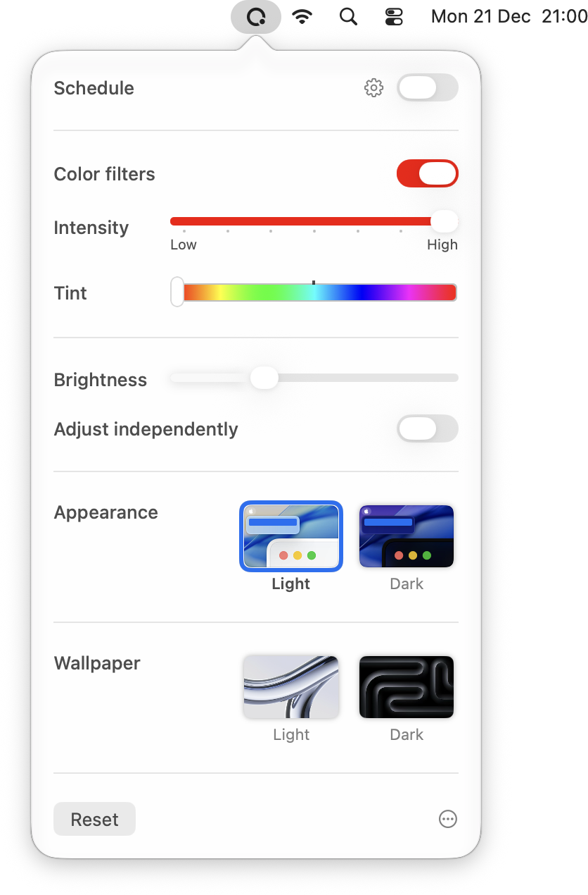
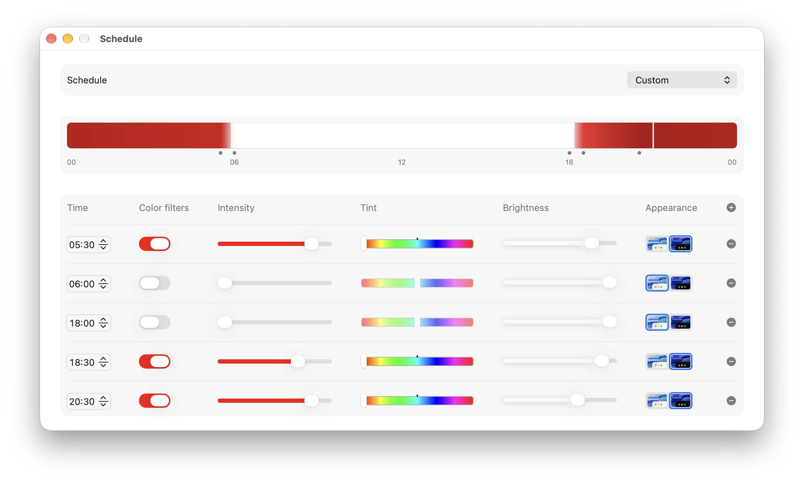
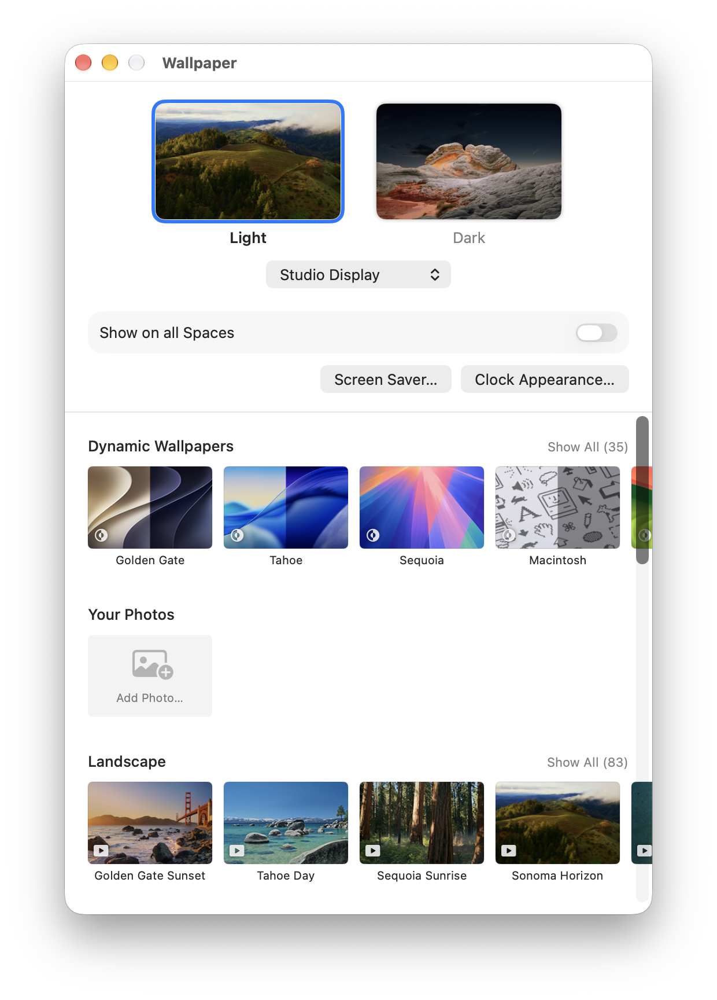

A red screen filter that goes all the way
Drives macOS's own Color Tint filter (System Settings › Accessibility › Display › Color Filters) with no overlay, so the whole screen—menu bar and all—turns fully red, further than Night Shift or f.lux.
Like Night Shift, but all the way to red.
A free, open-source macOS menu bar app that puts your Mac's color filter, display brightness, and Light/Dark appearance on one schedule.




Drives macOS's own Color Tint filter (System Settings › Accessibility › Display › Color Filters) with no overlay, so the whole screen—menu bar and all—turns fully red, further than Night Shift or f.lux.
Sets the backlight directly on Apple displays and—on Apple silicon—external monitors with DDC/CI (like MonitorControl and Lunar). Below the dot a quarter of the way along, the picture dims even darker than minimum; a Sidecar iPad gets a dark layer.
Turn on Adjust Independently for per-display brightness sliders (in the schedule too), DDC sliders that follow your monitor's own buttons, and brightness keys that control whichever display the pointer is on.
Pick from macOS's wallpapers, Photos, files, or a shuffle. Safelight combines your two picks into one native Light/Dark wallpaper so macOS fades between them on any change—across all Spaces or per Space and display—plus Screen Saver and Lock Screen Clock settings.
Add as many times of day as you like, anchored to clock times or Night Shift's sunrise and sunset for your location. Color filter intensity, tint, brightness, and Light/Dark appearance fade smoothly between them.
Uses System Settings' own controls and translations, so Safelight appears in your Mac's language. No account, no telemetry, automatic signed updates via Sparkle, and the entire app lives in one Swift file.
Install and keep Safelight in your tap with one command:
brew install --cask mopfaff/tap/safelight
Needs macOS 15.5 or later on Apple silicon or Intel. Open the .dmg and drag Safelight to Applications.
On first launch (Safelight isn't notarized, and isn't on the Mac App Store because it uses the same private macOS functions as System Settings):
Once only. Want to read the code or build it yourself? All of it is in Safelight.swift, and updates install automatically through Sparkle (can be turned off from the menu bar icon).